Quality note
This board is under evidence audit after a weak pass over-promoted some screenshot-level leads. Treat High interest as worth checking first, Worth reviewing as potentially relevant but not automatically application-ready, and Unsorted / source items as research queue only.
Current honest state: there may be no clean High interest item right this second. That is better than pretending a dated or weakly verified lead is stronger than it is.
Before Maia applies anywhere, confirm the role is still active from the original source or official organisation page.
Focus here first
The strongest fits. Best place to spend attention.
Worth reviewingMaybe / keep alive
Relevant opportunities that need judgment, not instant dismissal.
Low priorityWatch, don’t chase
Interesting institutions or roles that are not the right fit right now.
Expired / constrainedReference only
Good examples, weak timing, or practical blockers.
Unsorted / source itemsSee everything
Useful leads, source posts, and ambiguous items Maia should still be able to inspect directly.
High interest
Updated 2026-05-06 after processing 86 new images. Three active leads with clear timing and strong fit.
ALL PURPOSE
IS LOOKING FOR AN INTERN
All Purpose Studio
URGENT — apply now
Role: Intern (creative / design)
Location: London
Start: May 2026 — this month. Applications closing now.
Apply: jobs@allpurpose.studio — send portfolio
Source: @allpurpose.studio — direct studio post, 26–27 April 2026
Intern @Luke Halls 2026/7
Moving image · Live performance
Illustration & design skills valued
Luke Halls Studio
Strong fit
Role: Intern — multidisciplinary moving image design for live performance
Period: 2026/7 — placement year, apply now
Apply: office@lukehalls.com
Why it matters: moving image / projection / live design sits directly in Maia's creative direction and exhibitions lane. Explicitly wants illustration and design skills.
✳ DESIGN INTERNSHIP
INFO@TWO-SEE.COM
TwoSee Studio
Recently posted
Role: Graphic design intern — full-time
Location: London
Posted: ~19 April 2026 — likely still open
Apply: INFO@TWO-SEE.COM — send portfolio
Studio: Music / events creative work — festival identity, event graphics
WE'RE HIRING
Creative Producer &
Junior Art Director
Bompas & Parr · Barbican
Bompas & Parr
High interestVerify deadline
Roles: Creative Producer / Junior Art Director (two positions)
Location: Barbican, City of London
Why Maia should care: internationally celebrated experiential and food-art studio, directly in the creative direction / exhibitions lane. Barbican-based. 797 likes, liked by @ual_creativeshift.
Worth reviewing
JACK NIMBLE
Internships
Autumn 2026
(Yes it's paid!)
Jack Nimble
Worth reviewingPaid
Role: Internships — Autumn 2026 cycle
Pay: Confirmed paid
Source: @wearejacknimble — 949 likes, studio's own post
Why Maia may care: established creative studio, strong profile, autumn timing means apply now. Check wearejacknimble for full details.
ARRCC
Student Internship
22 Jun – 10 Jul 2026
Deadline: 17 May 2026
ARRCC — Student Internship
Open deadline17 May closes
Role: Student Internship
Dates: 22 June – 10 July 2026
Deadline: 17 May 2026 — 11 days from now
Note: ARRCC is a luxury interior architecture/design studio. Design-adjacent but not Maia's core lane. Worth a look if architectural/spatial design is of interest.
Source: @_arrcc Instagram (verified)
HACHETTE
DESIGN
INTERNSHIP
2026
Hachette UK — Design Internship
Worth reviewing£27k pro-rata
Role: Design Internship across three Hachette divisions
Duration: Six weeks
Pay: £27k pro-rata
Mode: Hybrid / London
Season: Summer 2026 — verify deadline at hachette.co.uk
Source: @hachetteuk / @octopus_books_ Instagram
2026
INTERNSHIP
···→ OPEN
Art & Graft
Worth reviewing2026 confirmed open
Role: Intern — A&G Internship Programme 2026
Studio: Motion design and animation — London
Status: Explicitly confirmed open for 2026. Deadline unknown — verify at artandgraft.com
Source: @artandgraft — studio's own post, 447 likes
We are looking for a
Junior
Graphic
Designer
Fraser Muggeridge Studio
Worth reviewing996 likes
Role: Junior Graphic Designer
Studio: Typographic and cultural graphic design — London
Why it matters: Fraser Muggeridge designs for Barbican, arts publishers, and serious cultural orgs. Deep fit with Maia's interests. Strong community signal — liked by simongoode and 995 others.
Internship Opportunity
Cover design · Artworking · London Living Wage
HarperCollins UK
Worth reviewingLondon Living Wage
Role: Design Intern — 3–4 positions, summer 2026
Work: Cover design and artworking across imprints, hybrid, ~1 month
Source: @harpercollinsuk_design — direct from publisher's design team, 415 likes. Verify deadline at harpercollins.co.uk
(CMDS)
ROLES (08)
We're Hiring
Brand Designer · Graphic Designer
Motion Designer · Videographer
Photographer + more
Apply by 27 June 2026
Remote / London
CMDS — 8 Roles
Worth reviewingDeadline 27 Jun
Roles: Brand Designer, Graphic Designer, Motion Designer, Videographer, Photographer, Social Media Manager, Account Manager, Web Developer
Deadline: 27 June 2026 — current and open
Location: Remote / London based
Source: @bountyhunters_ / @cansumerdamert — 6,459 likes. Verify specifics at @cansumerdamert Instagram

Geoffrey Bawa Trust
Worth reviewingConstrained
Roles: Gallery Assistant / Graphic and Communications Designer
Company: Sri Lankan cultural institution focused on architecture, arts, ecology, exhibitions, and publications.
Why Maia may care: strong exhibition/cultural fit, but real feasibility issues because the roles are Colombo-based and require legal eligibility to work in Sri Lanka.
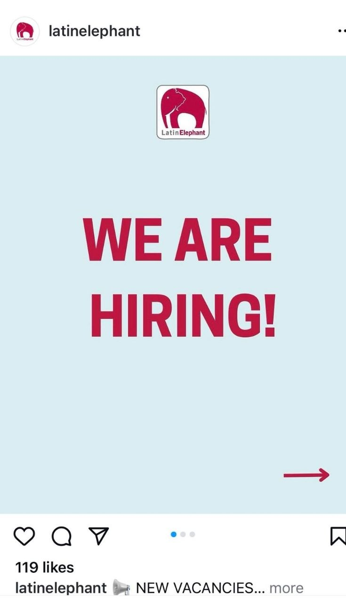
Latin Elephant
Worth reviewingMixed timing
Roles: Network Coordinator / Project Officer
Company: London charity focused on migrant communities, urban change, public engagement, and cultural activity.
Why Maia may care: relevant organisation, but the roles lean more community/policy than pure creative or exhibition work, and the captured deadlines appear to have passed. Treat mainly as reference unless the vacancies page confirms current openings.

Whip Creative Studio
Worth reviewingRole verified
Roles: Art Direction & Production Intern / Design & Web Intern
Company: Design-led creative studio with a confirmed internships page listing at least one real role.
Why Maia may care: one of the strongest direct creative fits in the batch, now backed by more than just screenshot evidence.

2x4
Worth reviewingTiming likely passed
Roles: Branding / Environments / Strategy Internships
Company: Multidisciplinary design studio with distinct Branding, Environments, and Strategy teams.
Why Maia may care: one of the strongest studio references in the set, but the official pages cite April start dates / an April 3 submission window, so this should be treated as a future-cycle target rather than a current live opening.

Imagineers Film
Worth reviewingVerification needed
Roles: Junior Creative / Creative Intern
Company: Verified production and creative agency specialising in storytelling-driven branding.
Why Maia may care: role titles are promising, but the job itself is still screenshot-level evidence; the company careers URL checked during audit returns 404. Treat as a research lead, not application-ready.

Stupid Jones
Worth reviewingVerification needed
Roles: Intern / Graphic Designer
Company: London-based creative or fashion-adjacent studio / brand.
Why Maia may care: junior creative framing and graphic design relevance make it worth preserving, but this remains screenshot/email-level evidence only. Not application-ready until the original post or company source is verified.
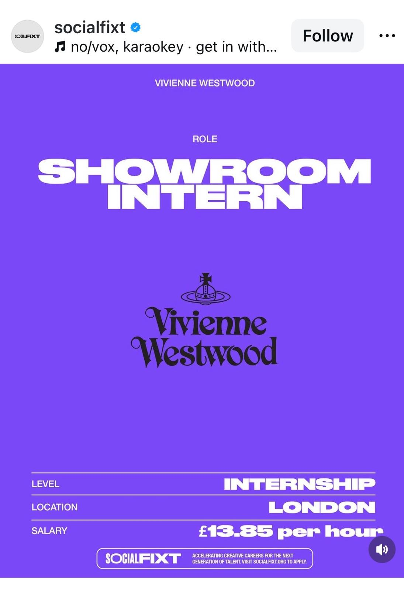
Vivienne Westwood
Worth reviewingAdjacent fit
Role: Showroom Intern
Company: Major fashion house with strong visual and cultural identity.
Why Maia may care: not a perfect lane match, and the application source still needs verification, but a paid London opportunity in a serious aesthetic environment is worth seeing as an adjacent lead.
Low priority

Crafts Council
Low priorityLive roles
Roles: Director of Marketing, Communications & Audiences / Senior Community and Memberships Manager
Company: Major UK cultural institution focused on craft, learning, collections, and public programming.
Why Maia may care: great institution, wrong level and wrong role type for her right now.
Expired / constrained

The British Museum
Role expiredWatch institution
Original role: Junior Graphic Designer
Company: Major UK museum and cultural institution.
Status (verified 2026-05-06): Official recruitment portal confirmed live and fully checked. Junior Graphic Designer is not listed — confirmed expired. No current internship or junior creative role open. Strong watch institution for future cycles.

Raw Daisies
Worth reviewingExpired
Roles: Marketing / Audio-Video / Merch Intern
Company: Independent creative production company working across film, theatre, events, fashion, and merch.
Why Maia may care: useful creative-media reference case discovered through Instagram, but likely weaker due to remote lean and expired timing.
Unsorted / source items
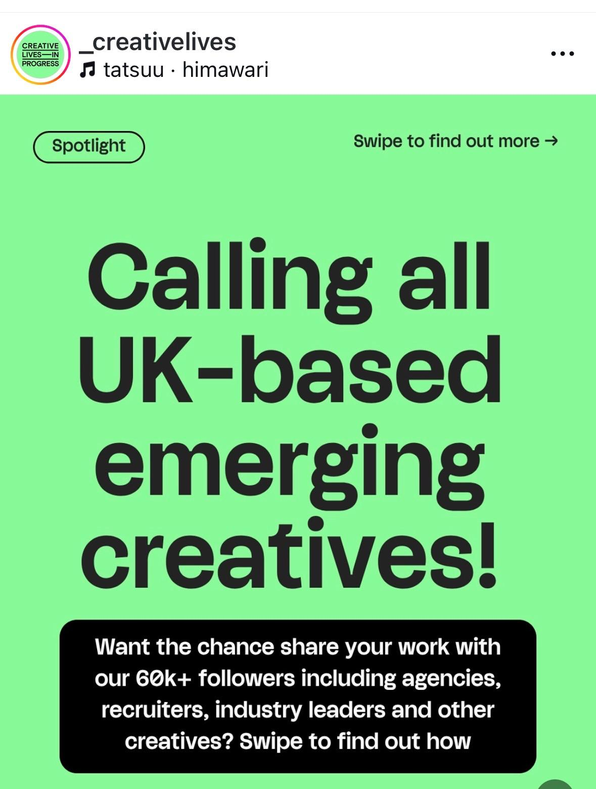
Creative Lives in Progress
Source itemNot a job post
Type: Discovery source / promo post
What it is: a Creative Lives in Progress source post calling for UK-based emerging creatives to share their work with a large creative-industry audience, rather than a normal job listing.
Why Maia may care: it is a real discovery/visibility route, not a role. Useful for exposure and network access, but it should not be confused with a standard internship or job.
Status: official site and opportunities section are reachable; still source/research only. Do not rank as a normal opportunity.
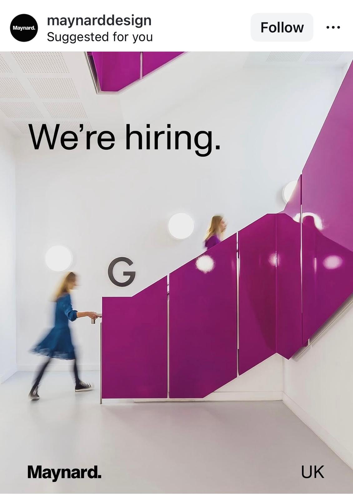
Maynard
Hold / unclearThin details
Type: Screenshot-level lead
What it is: a promising UK design-studio hiring signal from a real studio with an official domain (`maynard.design`), but the visible screenshot does not expose enough role detail yet.
Why Maia may care: the organisation itself is real, which makes this stronger than random screenshot junk, but the role still needs original-source recovery before promotion.
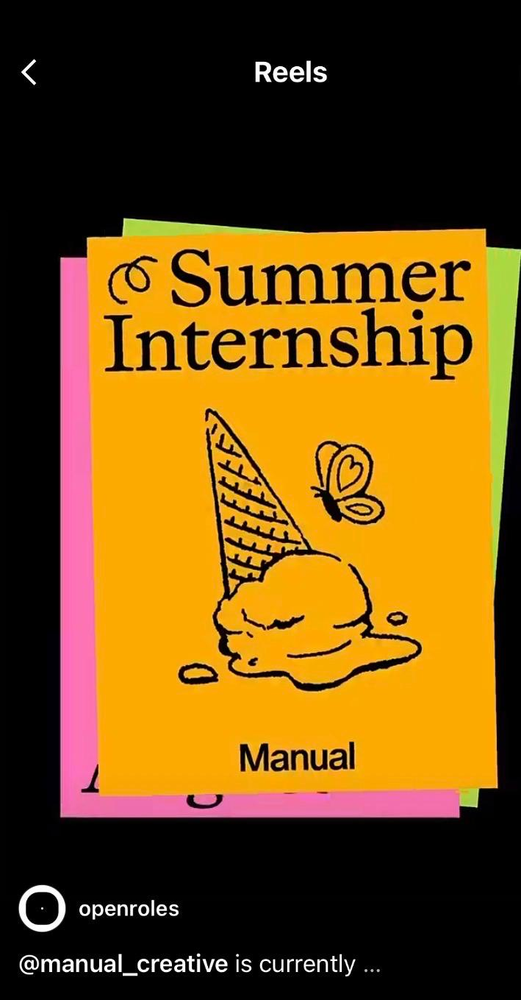
Manual
Hold / unclearNeeds source recovery
Type: Screenshot-level lead
What it is: a summer internship lead tied to a real organisation (`manualcreative.com`), but not yet traced back cleanly to an original listing.
Why Maia may care: relevant enough to preserve because the studio itself is real, but still too under-specified to rank. Needs original source recovery before promotion.
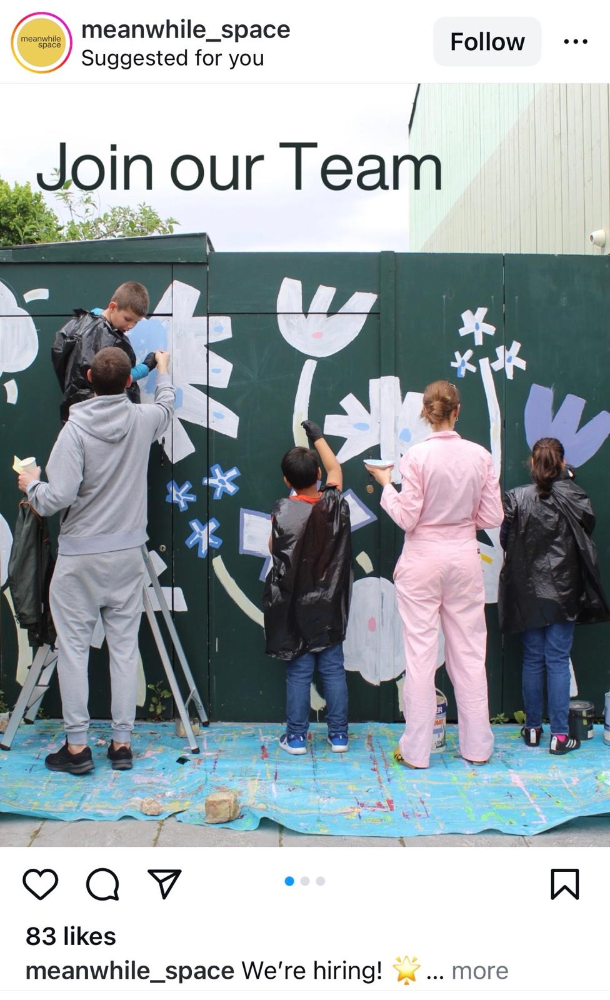
Meanwhile Space
Hold / unclearThin details
Type: Screenshot-level lead
What it is: a placemaking / community-space hiring signal from a real organisation with an official site, `/careers/` page, and direct `Work with us` path, but with too little visible role detail to classify cleanly yet.
Why Maia may care: it may touch exhibition, cultural, or public-space work, and the organisation is real, but the specific role remains too thin to judge cleanly. Needs source recovery before promotion.
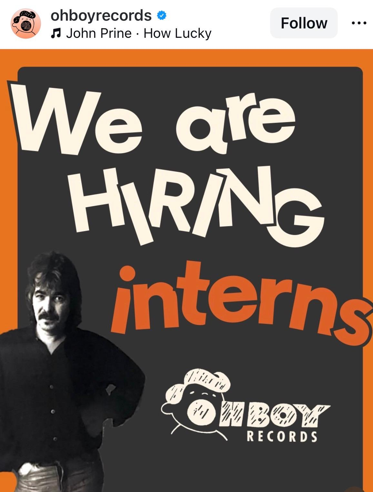
Oh Boy Records
Hold / unclearThin details
Type: Culture-adjacent lead
What it is: an internship-style creative/music lead with incomplete visible detail tied to a real official Oh Boy site/store, but without a recovered source listing.
Why Maia may care: not strong enough to promote. Checked `/pages/careers` and `/pages/jobs` both returned 404, so keep only as a research/source item until the actual internship post is found.
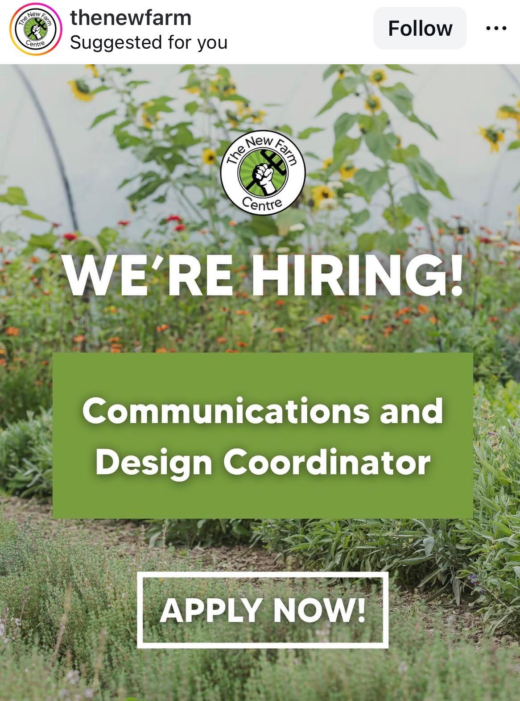
The New Farm Centre
Hold / unclearModerate fit
Type: Partially relevant lead
What it is: a communications and design coordinator role with some design relevance, but unclear fit against Maia’s strongest lane.
Why Maia may care: she should still be able to inspect it directly instead of having it disappear because the fit is mixed.
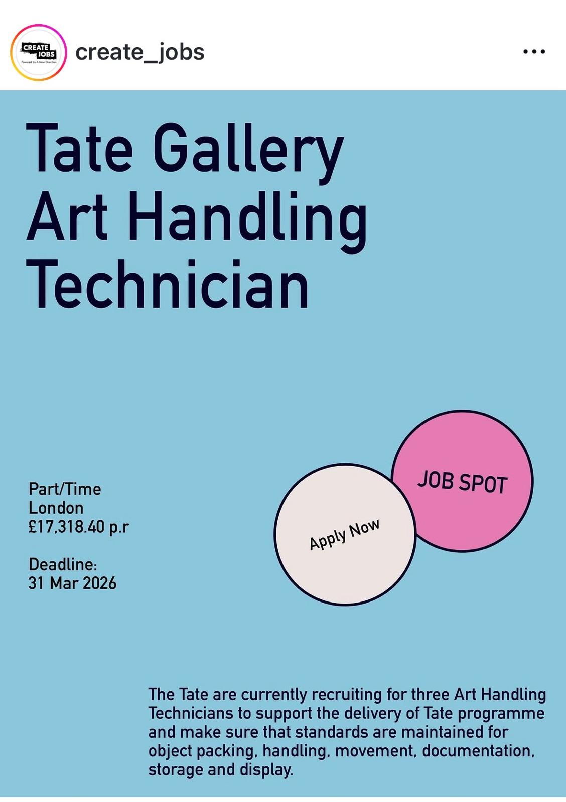
Tate
ExpiredInstitution verified
Type: Museum operations reference
What it is: an Art Handling Technician role at Tate from screenshot evidence; Tate itself is clearly real and serious, but the opening appears expired and was not independently recovered from the current official jobs path checked during audit.
Why Maia may care: useful as a reference case only, not something to spend current application energy on.
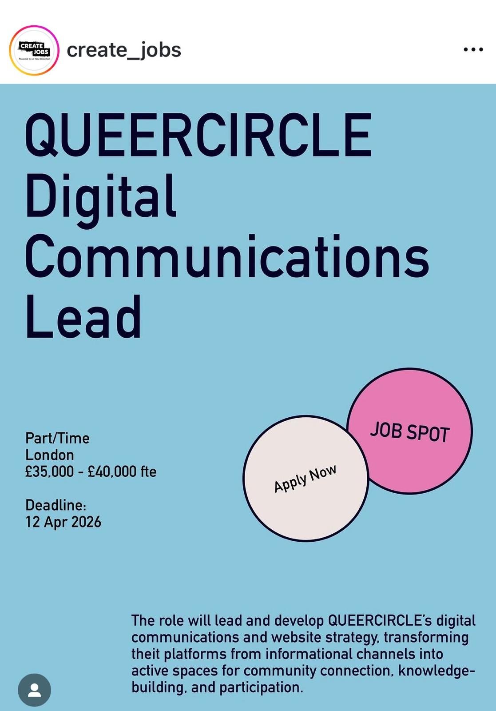
QUEERCIRCLE
Low priorityOrganisation verified
Type: Senior communications lead
What it is: a Digital Communications Lead screenshot tied to a real culturally relevant organisation, but the role itself was not independently recovered from the current official site during audit.
Why Maia may care: useful to see, but more as context than as a likely application target because it also looks above Maia’s level.
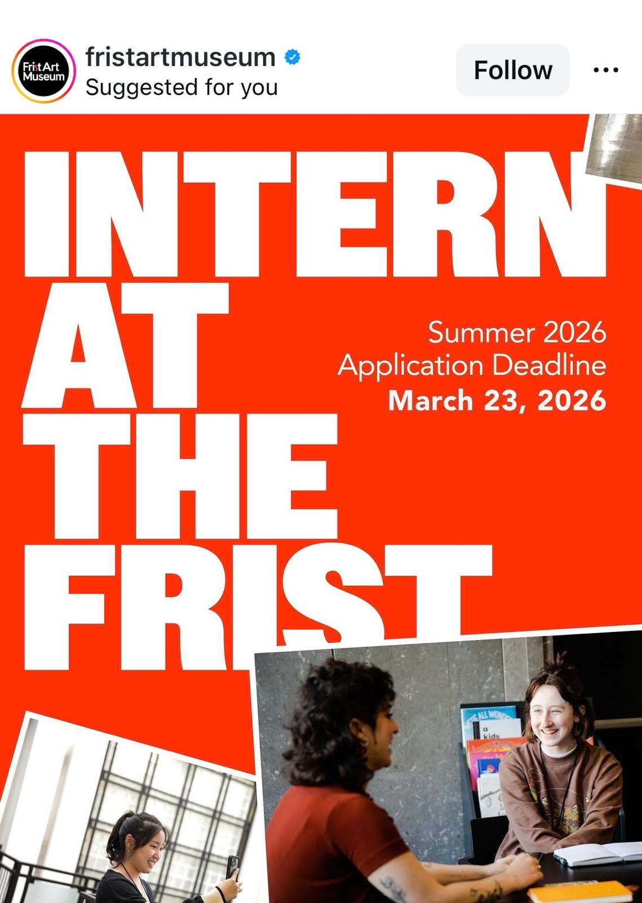
Frist Art Museum
ExpiredOrganisation verified
Type: Museum internship reference
What it is: a Summer 2026 internship lead from a verified art museum context that appears already expired.
Why Maia may care: useful as a reference case for the kind of museum opportunity worth spotting earlier next cycle.
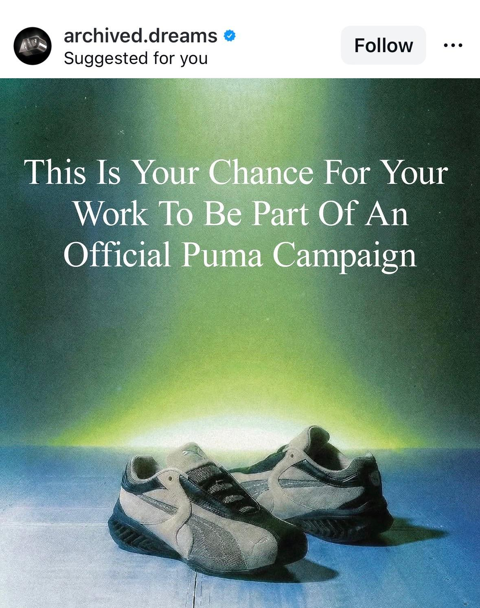
Archived Dreams / Puma
Hold / unclearNot clearly a job
Type: Campaign / creative opportunity signal
What it is: an ambiguous Puma-related creative post that does not read like a standard role listing.
Why Maia may care: still relevant enough to preserve because unusual creative opportunities often arrive in messy formats.
How to use this
- Start with the overview.
- Open only the opportunities that seem worth attention.
- Separate fit from feasibility.
- Do not over-filter too early.
Legend
High-interest strong fit
Worth reviewing relevant but not top-tier
Low priority / expired / constrained useful context, not active focus